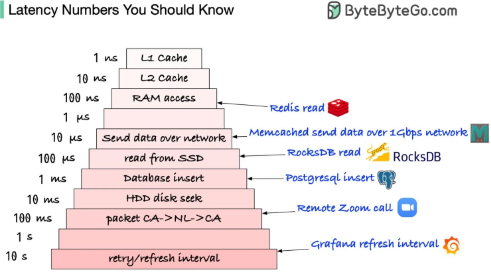
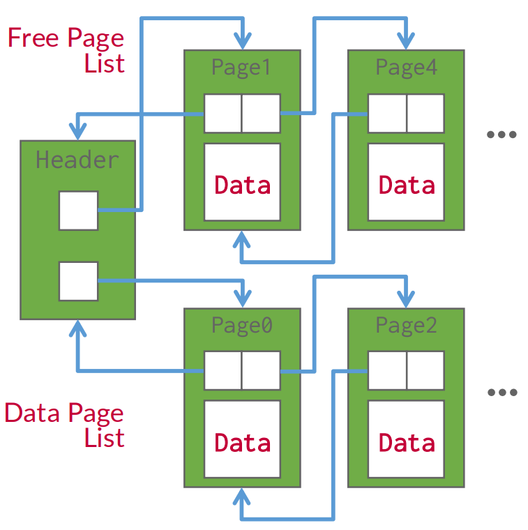
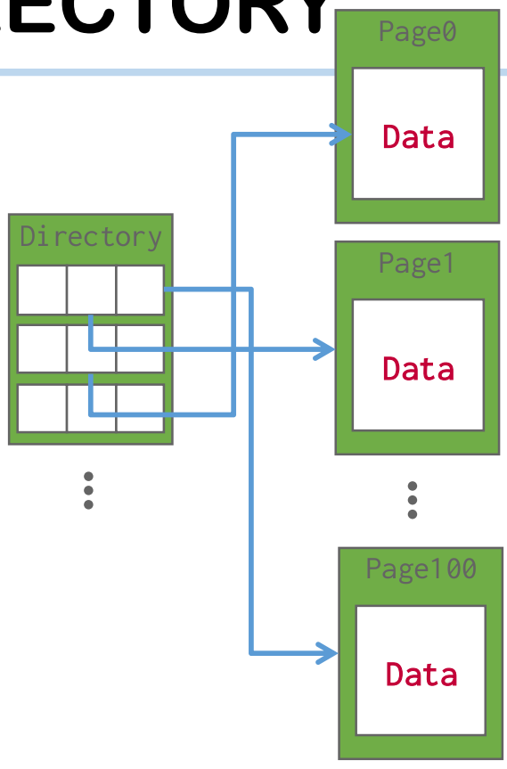
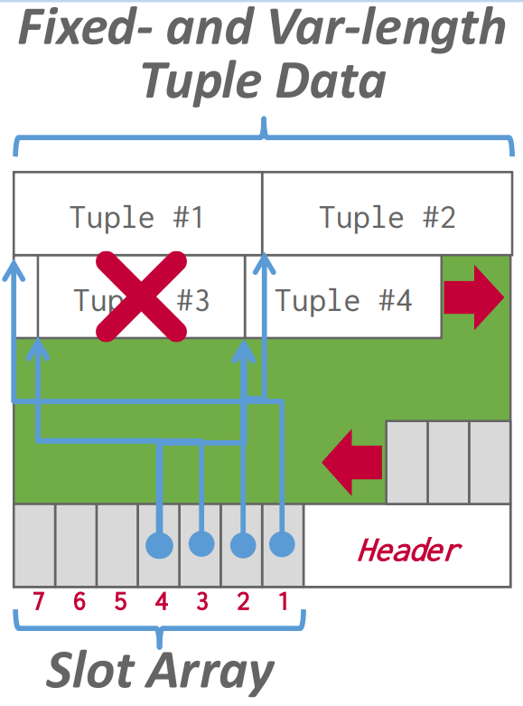
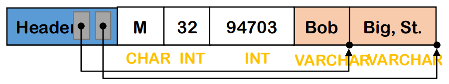

<!DOCTYPE html>
<html><head><title>03. Storage (Part 1 - Page, Slot)</title><meta charSet="utf-8"/><meta name="viewport" content="width=device-width, initial-scale=1.0"/><meta property="og:title" content="03. Storage (Part 1 - Page, Slot)"/><meta property="og:description" content="서울대학교 데이터사이언스대학원 정형수 교수님의 &amp;quot;데이터사이언스 응용을 위한 빅데이터 및 지식 관리 시스템&amp;quot; 강의를 필기한 내용입니다. 목차 Overview § File: named storage abstraction 이놈을 관리하는 것은 file system DBMS 에서는 table 을 logical file 들로 저장하고 여기에는 page 들이 들어있으며 각각은 tuple (record) 들로 구성되어 있다."/><meta property="og:image" content="https://mdg.haeramk.im/static/og-image.png"/><meta property="og:width" content="1200"/><meta property="og:height" content="675"/><link rel="icon" href="../../../../../static/icon.png"/><meta name="description" content="서울대학교 데이터사이언스대학원 정형수 교수님의 &amp;quot;데이터사이언스 응용을 위한 빅데이터 및 지식 관리 시스템&amp;quot; 강의를 필기한 내용입니다. 목차 Overview § File: named storage abstraction 이놈을 관리하는 것은 file system DBMS 에서는 table 을 logical file 들로 저장하고 여기에는 page 들이 들어있으며 각각은 tuple (record) 들로 구성되어 있다."/><meta name="generator" content="Quartz"/><link rel="preconnect" href="https://fonts.googleapis.com"/><link rel="preconnect" href="https://fonts.gstatic.com"/><link href="../../../../../index.css" rel="stylesheet" type="text/css" spa-preserve/><link href="https://cdn.jsdelivr.net/npm/katex@0.16.0/dist/katex.min.css" rel="stylesheet" type="text/css" spa-preserve/><link href="https://fonts.googleapis.com/css2?family=IBM Plex Mono&amp;family=Gowun Batang:wght@400;700&amp;family=Gowun Dodum:ital,wght@0,400;0,600;1,400;1,600&amp;display=swap" rel="stylesheet" type="text/css" spa-preserve/><script src="../../../../../prescript.js" type="application/javascript" spa-preserve></script><script type="application/javascript" spa-preserve>const fetchData = fetch(`../../../../../static/contentIndex.json`).then(data => data.json())</script></head><body data-slug="gardens/database/originals/bkms01.fall.2024.gsds.snu.ac.kr/lectures/03.-Storage-(Part-1---Page,-Slot)"><div id="quartz-root" class="page"><div id="quartz-body"><div class="left sidebar"><h1 class="page-title "><a href="../../../../..">Madison Digital Garden</a></h1><div class="spacer mobile-only"></div><div class="search "><div id="search-icon"><p>Search</p><div></div><svg tabIndex="0" aria-labelledby="title desc" role="img" xmlns="http://www.w3.org/2000/svg" viewBox="0 0 19.9 19.7"><title id="title">Search</title><desc id="desc">Search</desc><g class="search-path" fill="none"><path stroke-linecap="square" d="M18.5 18.3l-5.4-5.4"></path><circle cx="8" cy="8" r="7"></circle></g></svg></div><div id="search-container"><div id="search-space"><input autocomplete="off" id="search-bar" name="search" type="text" aria-label="Search for something" placeholder="Search for something"/><div id="results-container"></div></div></div></div><div class="darkmode "><input class="toggle" id="darkmode-toggle" type="checkbox" tabIndex="-1"/><label id="toggle-label-light" for="darkmode-toggle" tabIndex="-1"><svg xmlns="http://www.w3.org/2000/svg" xmlnsXlink="http://www.w3.org/1999/xlink" version="1.1" id="dayIcon" x="0px" y="0px" viewBox="0 0 35 35" style="enable-background:new 0 0 35 35;" xmlSpace="preserve"><title>Light mode</title><path d="M6,17.5C6,16.672,5.328,16,4.5,16h-3C0.672,16,0,16.672,0,17.5    S0.672,19,1.5,19h3C5.328,19,6,18.328,6,17.5z M7.5,26c-0.414,0-0.789,0.168-1.061,0.439l-2,2C4.168,28.711,4,29.086,4,29.5    C4,30.328,4.671,31,5.5,31c0.414,0,0.789-0.168,1.06-0.44l2-2C8.832,28.289,9,27.914,9,27.5C9,26.672,8.329,26,7.5,26z M17.5,6    C18.329,6,19,5.328,19,4.5v-3C19,0.672,18.329,0,17.5,0S16,0.672,16,1.5v3C16,5.328,16.671,6,17.5,6z M27.5,9    c0.414,0,0.789-0.168,1.06-0.439l2-2C30.832,6.289,31,5.914,31,5.5C31,4.672,30.329,4,29.5,4c-0.414,0-0.789,0.168-1.061,0.44    l-2,2C26.168,6.711,26,7.086,26,7.5C26,8.328,26.671,9,27.5,9z M6.439,8.561C6.711,8.832,7.086,9,7.5,9C8.328,9,9,8.328,9,7.5    c0-0.414-0.168-0.789-0.439-1.061l-2-2C6.289,4.168,5.914,4,5.5,4C4.672,4,4,4.672,4,5.5c0,0.414,0.168,0.789,0.439,1.06    L6.439,8.561z M33.5,16h-3c-0.828,0-1.5,0.672-1.5,1.5s0.672,1.5,1.5,1.5h3c0.828,0,1.5-0.672,1.5-1.5S34.328,16,33.5,16z     M28.561,26.439C28.289,26.168,27.914,26,27.5,26c-0.828,0-1.5,0.672-1.5,1.5c0,0.414,0.168,0.789,0.439,1.06l2,2    C28.711,30.832,29.086,31,29.5,31c0.828,0,1.5-0.672,1.5-1.5c0-0.414-0.168-0.789-0.439-1.061L28.561,26.439z M17.5,29    c-0.829,0-1.5,0.672-1.5,1.5v3c0,0.828,0.671,1.5,1.5,1.5s1.5-0.672,1.5-1.5v-3C19,29.672,18.329,29,17.5,29z M17.5,7    C11.71,7,7,11.71,7,17.5S11.71,28,17.5,28S28,23.29,28,17.5S23.29,7,17.5,7z M17.5,25c-4.136,0-7.5-3.364-7.5-7.5    c0-4.136,3.364-7.5,7.5-7.5c4.136,0,7.5,3.364,7.5,7.5C25,21.636,21.636,25,17.5,25z"></path></svg></label><label id="toggle-label-dark" for="darkmode-toggle" tabIndex="-1"><svg xmlns="http://www.w3.org/2000/svg" xmlnsXlink="http://www.w3.org/1999/xlink" version="1.1" id="nightIcon" x="0px" y="0px" viewBox="0 0 100 100" style="enable-background='new 0 0 100 100'" xmlSpace="preserve"><title>Dark mode</title><path d="M96.76,66.458c-0.853-0.852-2.15-1.064-3.23-0.534c-6.063,2.991-12.858,4.571-19.655,4.571  C62.022,70.495,50.88,65.88,42.5,57.5C29.043,44.043,25.658,23.536,34.076,6.47c0.532-1.08,0.318-2.379-0.534-3.23  c-0.851-0.852-2.15-1.064-3.23-0.534c-4.918,2.427-9.375,5.619-13.246,9.491c-9.447,9.447-14.65,22.008-14.65,35.369  c0,13.36,5.203,25.921,14.65,35.368s22.008,14.65,35.368,14.65c13.361,0,25.921-5.203,35.369-14.65  c3.872-3.871,7.064-8.328,9.491-13.246C97.826,68.608,97.611,67.309,96.76,66.458z"></path></svg></label></div></div><div class="center"><div class="page-header"><div class="popover-hint"><h1 class="article-title ">03. Storage (Part 1 - Page, Slot)</h1><p class="content-meta ">Sep 14, 2024, 16 min read</p><ul class="tags "><li><a href="../../../../../tags/database" class="internal tag-link">#database</a></li><li><a href="../../../../../tags/originals" class="internal tag-link">#originals</a></li><li><a href="../../../../../tags/snu-bkms24f" class="internal tag-link">#snu-bkms24f</a></li></ul></div></div><article class="popover-hint"><blockquote class="callout" data-callout="info">
<div class="callout-title">
                  <div class="callout-icon"><svg xmlns="http://www.w3.org/2000/svg" width="100%" height="100%" viewBox="0 0 24 24" fill="none" stroke="currentColor" stroke-width="2" stroke-linecap="round" stroke-linejoin="round"><circle cx="12" cy="12" r="10"></circle><line x1="12" y1="16" x2="12" y2="12"></line><line x1="12" y1="8" x2="12.01" y2="8"></line></svg></div>
                  <div class="callout-title-inner"><p>서울대학교 데이터사이언스대학원 정형수 교수님의 &quot;데이터사이언스 응용을 위한 빅데이터 및 지식 관리 시스템&quot; 강의를 필기한 내용입니다. </p></div>
                  
                </div>
<ul>
<li><a href="../../../../../gardens/database/originals/bkms01.fall.2024.gsds.snu.ac.kr/(SNU-GSDS)-Bigdata-and-Knowledge-Management-Systems-01" class="internal" data-slug="gardens/database/originals/bkms01.fall.2024.gsds.snu.ac.kr/(SNU-GSDS)-Bigdata-and-Knowledge-Management-Systems-01">목차</a></li>
</ul>
</blockquote>
<h2 id="overview">Overview<a aria-hidden="true" tabindex="-1" href="#overview" class="internal"> §</a></h2>
<ul>
<li>File: named storage abstraction
<ul>
<li>이놈을 관리하는 것은 file system</li>
</ul>
</li>
<li>DBMS 에서는 table 을 logical file 들로 저장하고 여기에는 page 들이 들어있으며 각각은 tuple (record) 들로 구성되어 있다.</li>
<li>Disk manager 는 이 logical file 들을 관리하고, “page” API 로 위의 계층에 노출한다.
<ul>
<li>바로 위의 Buffer manager 에서는 이 page 들에 대한 in-memory 상태를 관리한다.</li>
</ul>
</li>
</ul>
<h2 id="disk-based-dbms">Disk-based DBMS<a aria-hidden="true" tabindex="-1" href="#disk-based-dbms" class="internal"> §</a></h2>
<ul>
<li>Disk-base architecture: 일반적으로는 DBMS 는 disk 를 저장장치로 삼는다.
<ul>
<li>물론 in-memory 도 있지만 이것은 관심범위가 아님.</li>
<li>이때 disk 와 관련된 몇가지 정보들을 알아보면</li>
</ul>
</li>
</ul>
<h3 id="storage-hierarchy">Storage hierarchy<a aria-hidden="true" tabindex="-1" href="#storage-hierarchy" class="internal"> §</a></h3>
<p></p>
<ul>
<li>Volatile: random access, byte-addressable</li>
<li>Non-volatile: sequential access, block addr
<ul>
<li>이놈은 latency 가 크니까 한번에 큰 단위 (block) 으로 가져와서 bandwidth 를 늘려 latency 를 hiding 하게 된다.
<ul>
<li>따라서 한번에 여러 page 들을 allocate 하게 되고, 이 단위는 <em>extent</em> 라고 부른다.</li>
</ul>
</li>
<li>그리고 random 보다는 sequential 이 더 빠르다.
<ul>
<li>따라서 DBMS 는 최대한 random access 를 줄이고 sequential access 를 늘리려고 한다.</li>
</ul>
</li>
</ul>
</li>
</ul>
<h3 id="mmap">MMAP?<a aria-hidden="true" tabindex="-1" href="#mmap" class="internal"> §</a></h3>
<ul>
<li>OS 의 MMAP 을 활용하지는 않는다고 한다.</li>
<li>MMAP 을 사용하면 memory 접근하는 것처럼 file 저장이 가능하고 replacement 도 OS 이 해주니까 좋을 것 같을 수도 있다.
<ul>
<li>또한 여러 thread 가 접근하는 상황에서 MMAP 을 사용하면 page fault stall 도 줄일 수 있다.</li>
</ul>
</li>
<li>하지만 사용하지 않는다: OS 는 DBMS 에서 뭐하는지 모르기 때문.
<ul>
<li>OS 가 메모리 부족하다고 evict 시켜버렸는데 DBMS 에서는 지금 당장 필요한 놈인 상황이 발생하는 등의 문제가 생길 수 있다.</li>
<li>그리고 당장은 잘 이해되진 않지만 이런 문제가있을 수 있다고 한다:
<ul>
<li>그리고 dirty page 를 OS 마음대로 evict 할 수 있기 때문에 transaction safety 에도 문제가 생길 수 있고</li>
<li>DBMS 가 직접 page 를 관리하지 못하기 때문에 어떤 page 가 memory 에 있는지도 모르고 page fault 에 stall 되는 등의 문제가 있댄다.</li>
</ul>
</li>
</ul>
</li>
<li>이런 문제를 해결하기 위해 <code>madvise</code>, <code>msync</code>, <code>mlock</code> 와 같은 syscall 이 추가했지만 잘 안된다고 한다.</li>
<li>그래서 보통은 DBMS 가 직접 관리한다고 한다.
<ul>
<li><code>O_DIRECT</code> 로 가져올 것 같지만, MySQL 이나 PostgreSQL 이나 기본적으로는 사용하지 않고 있었다.</li>
<li>왜인지는 모르겠지만 뭐 그럴만한 이유가 있겠지</li>
</ul>
</li>
</ul>
<h3 id="file-storage">File storage<a aria-hidden="true" tabindex="-1" href="#file-storage" class="internal"> §</a></h3>
<ul>
<li>보통 DBMS 는 여러 file 들로 data 를 저장하는데, 일반적으로는 자신들이 사용하기 편한 file format (proprietary format) 을 이용한다.</li>
<li>참고로 block interface 나 custom filesystem 를 옛날에는 사용했는데, 요즘은 사용하지 않는다고 한다.
<ul>
<li>다만 cloud provider 에서는 아직도 사용한다.</li>
<li>어차피 노드를 DBaaS 하나만 사용하고 block interface 를 사용하는게 filesystem 끼는 것보다 더 빠르니까.</li>
</ul>
</li>
</ul>
<h2 id="storage-disk-manager">Storage (disk) manager<a aria-hidden="true" tabindex="-1" href="#storage-disk-manager" class="internal"> §</a></h2>
<ul>
<li>결론부터 말해보자면, Storage manager (혹은 disk manager) 는 DBMS 에서 사용하는 file 들을 관리한다.</li>
<li>File 들은 page 단위로 쪼개지고 (pagination), page 에는 tuple 이 slot 이라는 것으로 관리된다.</li>
<li>여기서 <code>page_id</code> 와 <code>slot_id</code> 는 모두 logical address 이고 이것에 대한 physical location 과의 mapping 을 관리해서 저 storage manager 의 핵심 역할이라고 볼 수 있다.</li>
<li>따라서 어떤 tuple (record) 는 <code>(filename + page_id + slot_id)</code> 으로 특정지을 수 있으며 이것을 Record ID (RID) 라고 한다.</li>
<li>그럼 저 page, slot 이 뭔지, 어떻게 생겼는지, 어떻게 이것으로 해당 tuple 을 찾아가는지 등을 알아보자.</li>
</ul>
<h2 id="page">Page<a aria-hidden="true" tabindex="-1" href="#page" class="internal"> §</a></h2>
<ul>
<li>Page 는 고정 크기의 data block 이다.
<ul>
<li>이 page size 는 configurable 하다: Psql 에서는 8k, MySQL 에서는 16k
<ul>
<li>PostgreSQL 에서는 hugepage 로 2m 까지 늘릴 수 있다.</li>
</ul>
</li>
</ul>
</li>
<li>그리고 이건 data (tuple) 뿐 아니라, 여러 metadata 나 index, log 도 저장하는 단위로 사용된다.</li>
<li>Page 는 unique logical ID (즉, page ID) 를 할당 받고 상위 layer 에서는 이것으로 page 에 접근하게 한다.</li>
<li>그리고 disk manager 는 이 page ID 에 대한 page 가 disk 상에 어디에 있는지 (physical location) 을 mapping 하여 table 로 갖고 있게 된다 (Indirection mapping table).
<ul>
<li>이 정보는 중요하기 때문에 여러 copy 를 갖고있는다고 한다.</li>
</ul>
</li>
<li>이렇게 해서 page 의 physical location 이 바뀌어도 상위 layer 에서는 이것을 알지 못하게 한다.
<ul>
<li>즉, physical location 과 logical address space 를 indirection 하는 것.</li>
<li>Data (physical) independence 를 위해 indirection 을 하는 또 하나의 사례인 것이다.</li>
</ul>
</li>
<li>근데 storage 에서 LBA 를 제공하는데 또 이렇게 abstraction 하는 이유는 무엇일까?
<ul>
<li>일단 하나 생각나는 것은 cloud 나 distributed 에서는 필요할듯: remote node 를 찾아갈 필요가 있으니</li>
<li>그리고 이 LBA 공간도 (위에서의 MMAP 과 비슷하게) DBMS 가 직접 관리하는게 아니다 보니 직접 관리하는 단위가 필요했을 듯</li>
</ul>
</li>
</ul>
<h2 id="heap-file-organization">Heap file organization<a aria-hidden="true" tabindex="-1" href="#heap-file-organization" class="internal"> §</a></h2>
<ul>
<li>File 에서 어떻게 page 들을 관리하는 지는 여러 종류가 있는데, 여기서는 Heap file organization 만 알아보자.</li>
<li>우선 heap file 은 page 들을 딱히 정렬해놓지 않는 (unordered collection of page) pagination 방법 이다.
<ul>
<li>Page 들도 정렬되어 있지 않고,</li>
<li>Page 안의 tuple 들도 정렬되어 있지 않다고 한다.</li>
<li>즉, Heap 자료구조와는 거의 연관이 없는 용어인 것.</li>
</ul>
</li>
<li>Page ID 로 page 를 찾아갈 때는,
<ul>
<li>일단 file 이 하나인 경우에는 그냥 page ID 를 file 내에서의 page index 로 사용할 수 있다고 한다.
<ul>
<li>이 부분은 좀 이해가 안되긴 한다.
<ul>
<li>Heap file 은 정렬이 안되어 있다는데 이건 page ID 로 정렬된게 아닌건지?</li>
<li>Page index 를 page ID 로 쓸거면 indirection mapping table 은 왜 필요한지?</li>
</ul>
</li>
<li>어쨋든 이때는 page ID 에 page size 를 곱하면 file 내에서의 offset 이 나오기 때문에 그냥 슥 읽어가면 된다.</li>
</ul>
</li>
<li>그리고 file 이 여러개인 경우에는 해당 page ID 가 어떤 file 의 어느 page index 에 있는지 에 대한 mapping 이 필요하다.
<ul>
<li>여기서도 이해 안되는 부분은:
<ul>
<li>그럼 이 mapping 이 disk manager 가 관리하는 indirection mapping table 일까?</li>
<li>File 정보는 RID 에 들어있는데, 그럼 file 별로 page id address space 가 존재하는건가? 만약에 그렇다면, 이때도 위처럼 그냥 page ID 를 in-file offset 으로 계산해 내서 찾아가는 건가? 그리고 만약에 그렇다면, 왜 mapping table 이 필요한건가?</li>
</ul>
</li>
<li>어쨋든 이 mapping 을 확인한 뒤에는 위에서와 동일한 방법으로 page 를 찾아갈 수 있다.</li>
</ul>
</li>
</ul>
</li>
<li>그럼 이런 mapping 정보들과 더불어 free page 가 어디에 있는지를 관리해야 하는데, 관리하는 방법은 크게 두 종류가 있다.</li>
</ul>
<p></p>
<ul>
<li>Linked list 방식
<ul>
<li>여기에서는 file 의 맨 앞에 header page 가 있고, 여기에는 두 개의 pointer 가 담긴다.
<ul>
<li>Data page linked list 의 head, 그리고 free page linked list 의 head.</li>
</ul>
</li>
<li>그리고 각 page 들의 맨 앞에도 이런 두 개의 pointer 가 있어서 data page 의 경우에는 다음 data page 의 위치, free page 의 경우에는 다음 free page 의 위치가 담긴다.</li>
<li>그리고 각 page 의 header 에 free slot (slot 이 뭔지는 뒤에 나온다) 에 대한 정보가 담긴다.</li>
</ul>
</li>
</ul>
<p></p>
<ul>
<li>Directory 방식
<ul>
<li>일단 directory page 라는게 있는데, 이놈은 data page 가 어느 file 에 있는지에 대한 mapping 을 갖고 있다.
<ul>
<li>아마 data page 에 대한 page id 와 filename + page index 의 mapping 을 저장하지 않을까.</li>
</ul>
</li>
<li>그리고 free (empty) page 들에 대한 정보, 그리고 page 별 free slot 의 개수도 여기에 저장된다고 한다.</li>
</ul>
</li>
<li>당연히 linked list 보다는 directory 방식을 보통 사용한다.</li>
</ul>
<h2 id="page-header-slotted-array">Page header, slotted array<a aria-hidden="true" tabindex="-1" href="#page-header-slotted-array" class="internal"> §</a></h2>
<ul>
<li>Page header 에는 page 내에서 slot 을 찾기 위한 metadata 가 들어있다.</li>
<li>일단 tuple 이 page 에 어떻게 저장되면 좋을 지 생각해 보자.</li>
<li>우선 그냥 tuple 을 sequential 하게 쭉 채울 수 있을 것이다.
<ul>
<li>근데 이때는 delete 시에 이 공간에 대한 fragmentation 이 생기고 결국에는 compaction 을 해야 된다.</li>
<li>따라서 이 방식은 잘 사용하지 않는다.</li>
</ul>
</li>
</ul>
<p></p>
<ul>
<li>요즘 쓰는것은 slotted array 방식이다.
<ul>
<li>Page 에는 slot 들로 구성된 array 가 있고, slot 에는 각 tuple 의 starting point 와 size 를 저장한다.</li>
<li>그럼 tuple 이 추가되면 slot 도 추가된다
<ul>
<li>Tuple 의 증가 방향과 slot 의 증가 방향은 반대로 구성되어 tuple 과 slot 이 증가되는 것을 고정 크기의 page 로 감당한다.</li>
<li>보통 tuple 은 page 시작부터 채워지고, header 는 page 마지막에, slot 은 header 이후부터 성장하는 느낌으로 생각하면 된다.</li>
</ul>
</li>
<li>따라서 이 slot 또한 logical indirection 이라고 할 수 있다.
<ul>
<li>즉, tuple 이 삭제되면 이후의 것들을 전부 땡기고</li>
<li>위치가 변경된 tuple 들에 대해 slot 의 내용만 바꿔주면</li>
<li>Tuple 에 접근할 때는 그냥 이 slot 만 보고 접근하면 되기 때문에 이 tuple 이 여기저기 움직여도 접근을 위한 logical address 인 slot id 는 바꾸지 않아도 된다는 것.</li>
</ul>
</li>
</ul>
</li>
<li>Page header 에 slot 들에 대한 metadata 가 저장되는데,
<ul>
<li>가령 빈 slot 이나 사용중인 slot 의 개수라던지</li>
<li>마지막 사용된 slot 에 대한 tuple 의 시작지점이라던지
<ul>
<li>이것은 다음 slot 을 생성할 때 사용된다.</li>
</ul>
</li>
</ul>
</li>
<li>어떤 DBMS (가령 Oracle) 의 경우에는 self-contained page 를 사용한다고 한다.
<ul>
<li>이 말은 page header 에 table 의 schema 와 같은 정보들까지 다 들어있는 것을 말한다.</li>
<li>이 정보들은 recovery 시에 사용한다고 하네</li>
</ul>
</li>
<li>그리고 어떤 DBMS 는 JOIN 할 때 같이 불려나가는 애들을 같은 page 에 위치시키기도 한다.
<ul>
<li>당연히 JOIN 성능은 좋아지지만, update 성능은 구려진다고 한다.</li>
</ul>
</li>
</ul>
<h2 id="tuple-layout">Tuple layout<a aria-hidden="true" tabindex="-1" href="#tuple-layout" class="internal"> §</a></h2>
<ul>
<li>Tuple 은 각 slot 내에서 어떻게 저장되는지 알아보자.</li>
<li>일단 당연히 이 tuple 안에도 header 가 있어서 여기에 여러 metadata 가 담긴다.</li>
<li>Tuple 의 domain 이 가질 수 있는 값은 크게 세 가지가 있다: fixed size value, variable size value, NULL</li>
<li>Fixed sized value 는 딱히 고려할 것이 없다.
<ul>
<li>어차피 data 의 사이즈가 고정되어 있기 때문에, offset 을 알아낼 때는 이 고정 사이즈만 더해주면 되기 때문.</li>
</ul>
</li>
</ul>
<p></p>
<ul>
<li>Variable sized value 를 처리하는 방법들은 대강 다음을 생각할 수 있다.
<ul>
<li>Fixed-size with padding: 당연히 padding 만큼 공간이 낭비된다.</li>
<li>Delimiter: CSV 처럼 delimiter 를 사용하자는 것인데,
<ul>
<li>이것이 등장할 때까지 계속 읽어야 되고 (얼마나 읽어야 되는지 사전에 알 수 없음)</li>
<li>해당 delimiter 는 domain value 내에 포함될 수 없다는 문제점이 있다.</li>
</ul>
</li>
<li>Domain 앞에 length 적기 (DNS packet 과 동일한 방식) 도 가능한데,
<ul>
<li>이건 얼마나 읽어야 하는지는 바로 알 수 있지만 offset 을 바로 계산하지는 못한다는 단점이 있다.</li>
</ul>
</li>
<li>Header 에 length 적기
<ul>
<li>Offset 은 이 length 들로 계산할 수 있기 때문에, variable sized value 들에 대해서만 순서대로 header 에 length 를 적으면 해결된다.</li>
<li>요즘은 이것을 사용한다고 한다.</li>
</ul>
</li>
</ul>
</li>
<li>NULL 을 표현하는 것은 nullmap 을 사용한다. (null bitmap)
<ul>
<li>이걸로 어디가 null 인지 표시하고, NULL 이면 해당 domain 은 누락하고 다음 domain 저장</li>
<li>그리고 bitmap 의 크기는 attr size 가 아니다; nullable attr 의 개수만큼만 bitmap 을 유지한다.</li>
</ul>
</li>
<li>따라서 어떤 값에 대한 tuple 내에서의 offset 을 계산하는 것은 다음처럼 요약할 수 있다:
<ul>
<li>원하는 값이 <span class="math math-inline"><span class="katex"><span class="katex-html" aria-hidden="true"><span class="base"><span class="strut" style="height:0.6833em;"></span><span class="mord mathnormal" style="margin-right:0.13889em;">T</span></span></span></span></span> 번째 column <span class="math math-inline"><span class="katex"><span class="katex-html" aria-hidden="true"><span class="base"><span class="strut" style="height:0.8333em;vertical-align:-0.15em;"></span><span class="mord"><span class="mord mathnormal" style="margin-right:0.07153em;">C</span><span class="msupsub"><span class="vlist-t vlist-t2"><span class="vlist-r"><span class="vlist" style="height:0.3283em;"><span style="top:-2.55em;margin-left:-0.0715em;margin-right:0.05em;"><span class="pstrut" style="height:2.7em;"></span><span class="sizing reset-size6 size3 mtight"><span class="mord mtight"><span class="mord mathnormal mtight" style="margin-right:0.13889em;">T</span></span></span></span></span><span class="vlist-s">​</span></span><span class="vlist-r"><span class="vlist" style="height:0.15em;"><span></span></span></span></span></span></span></span></span></span></span> 라면, iterator <span class="math math-inline"><span class="katex"><span class="katex-html" aria-hidden="true"><span class="base"><span class="strut" style="height:0.6595em;"></span><span class="mord mathnormal">i</span></span></span></span></span> (<span class="math math-inline"><span class="katex"><span class="katex-html" aria-hidden="true"><span class="base"><span class="strut" style="height:0.7804em;vertical-align:-0.136em;"></span><span class="mord">0</span><span class="mspace" style="margin-right:0.2778em;"></span><span class="mrel">≤</span><span class="mspace" style="margin-right:0.2778em;"></span></span><span class="base"><span class="strut" style="height:0.6986em;vertical-align:-0.0391em;"></span><span class="mord mathnormal">i</span><span class="mspace" style="margin-right:0.2778em;"></span><span class="mrel">&lt;</span><span class="mspace" style="margin-right:0.2778em;"></span></span><span class="base"><span class="strut" style="height:0.6833em;"></span><span class="mord mathnormal" style="margin-right:0.13889em;">T</span></span></span></span></span>) 에 대해</li>
<li>만약 <span class="math math-inline"><span class="katex"><span class="katex-html" aria-hidden="true"><span class="base"><span class="strut" style="height:0.8333em;vertical-align:-0.15em;"></span><span class="mord"><span class="mord mathnormal" style="margin-right:0.07153em;">C</span><span class="msupsub"><span class="vlist-t vlist-t2"><span class="vlist-r"><span class="vlist" style="height:0.3117em;"><span style="top:-2.55em;margin-left:-0.0715em;margin-right:0.05em;"><span class="pstrut" style="height:2.7em;"></span><span class="sizing reset-size6 size3 mtight"><span class="mord mtight"><span class="mord mathnormal mtight">i</span></span></span></span></span><span class="vlist-s">​</span></span><span class="vlist-r"><span class="vlist" style="height:0.15em;"><span></span></span></span></span></span></span></span></span></span></span> 가 fixed sized 라면, 해당 크기를 그냥 offset 에 더한다.</li>
<li>만약 <span class="math math-inline"><span class="katex"><span class="katex-html" aria-hidden="true"><span class="base"><span class="strut" style="height:0.8333em;vertical-align:-0.15em;"></span><span class="mord"><span class="mord mathnormal" style="margin-right:0.07153em;">C</span><span class="msupsub"><span class="vlist-t vlist-t2"><span class="vlist-r"><span class="vlist" style="height:0.3117em;"><span style="top:-2.55em;margin-left:-0.0715em;margin-right:0.05em;"><span class="pstrut" style="height:2.7em;"></span><span class="sizing reset-size6 size3 mtight"><span class="mord mtight"><span class="mord mathnormal mtight">i</span></span></span></span></span><span class="vlist-s">​</span></span><span class="vlist-r"><span class="vlist" style="height:0.15em;"><span></span></span></span></span></span></span></span></span></span></span> 가 variable sized 라면, 이놈이 몇번째 variable sized column 확인해서 header 에 저장된 length 들을 통해 이놈의 length 를 알아내 offset 에 더한다.</li>
<li>만약 <span class="math math-inline"><span class="katex"><span class="katex-html" aria-hidden="true"><span class="base"><span class="strut" style="height:0.8333em;vertical-align:-0.15em;"></span><span class="mord"><span class="mord mathnormal" style="margin-right:0.07153em;">C</span><span class="msupsub"><span class="vlist-t vlist-t2"><span class="vlist-r"><span class="vlist" style="height:0.3117em;"><span style="top:-2.55em;margin-left:-0.0715em;margin-right:0.05em;"><span class="pstrut" style="height:2.7em;"></span><span class="sizing reset-size6 size3 mtight"><span class="mord mtight"><span class="mord mathnormal mtight">i</span></span></span></span></span><span class="vlist-s">​</span></span><span class="vlist-r"><span class="vlist" style="height:0.15em;"><span></span></span></span></span></span></span></span></span></span></span> 가 nullable 이고 nullmap 에 해당 bit 가 켜져 있으면, 다음 column 으로 넘어간다.</li>
</ul>
</li>
</ul></article></div><div class="right sidebar"><div class="graph "><h3>Graph View</h3><div class="graph-outer"><div id="graph-container" data-cfg="{&quot;drag&quot;:true,&quot;zoom&quot;:true,&quot;depth&quot;:1,&quot;scale&quot;:1.1,&quot;repelForce&quot;:0.5,&quot;centerForce&quot;:0.3,&quot;linkDistance&quot;:30,&quot;fontSize&quot;:0.6,&quot;opacityScale&quot;:1,&quot;showTags&quot;:true,&quot;removeTags&quot;:[]}"></div><svg version="1.1" id="global-graph-icon" xmlns="http://www.w3.org/2000/svg" xmlnsXlink="http://www.w3.org/1999/xlink" x="0px" y="0px" viewBox="0 0 55 55" fill="currentColor" xmlSpace="preserve"><path d="M49,0c-3.309,0-6,2.691-6,6c0,1.035,0.263,2.009,0.726,2.86l-9.829,9.829C32.542,17.634,30.846,17,29,17
	s-3.542,0.634-4.898,1.688l-7.669-7.669C16.785,10.424,17,9.74,17,9c0-2.206-1.794-4-4-4S9,6.794,9,9s1.794,4,4,4
	c0.74,0,1.424-0.215,2.019-0.567l7.669,7.669C21.634,21.458,21,23.154,21,25s0.634,3.542,1.688,4.897L10.024,42.562
	C8.958,41.595,7.549,41,6,41c-3.309,0-6,2.691-6,6s2.691,6,6,6s6-2.691,6-6c0-1.035-0.263-2.009-0.726-2.86l12.829-12.829
	c1.106,0.86,2.44,1.436,3.898,1.619v10.16c-2.833,0.478-5,2.942-5,5.91c0,3.309,2.691,6,6,6s6-2.691,6-6c0-2.967-2.167-5.431-5-5.91
	v-10.16c1.458-0.183,2.792-0.759,3.898-1.619l7.669,7.669C41.215,39.576,41,40.26,41,41c0,2.206,1.794,4,4,4s4-1.794,4-4
	s-1.794-4-4-4c-0.74,0-1.424,0.215-2.019,0.567l-7.669-7.669C36.366,28.542,37,26.846,37,25s-0.634-3.542-1.688-4.897l9.665-9.665
	C46.042,11.405,47.451,12,49,12c3.309,0,6-2.691,6-6S52.309,0,49,0z M11,9c0-1.103,0.897-2,2-2s2,0.897,2,2s-0.897,2-2,2
	S11,10.103,11,9z M6,51c-2.206,0-4-1.794-4-4s1.794-4,4-4s4,1.794,4,4S8.206,51,6,51z M33,49c0,2.206-1.794,4-4,4s-4-1.794-4-4
	s1.794-4,4-4S33,46.794,33,49z M29,31c-3.309,0-6-2.691-6-6s2.691-6,6-6s6,2.691,6,6S32.309,31,29,31z M47,41c0,1.103-0.897,2-2,2
	s-2-0.897-2-2s0.897-2,2-2S47,39.897,47,41z M49,10c-2.206,0-4-1.794-4-4s1.794-4,4-4s4,1.794,4,4S51.206,10,49,10z"></path></svg></div><div id="global-graph-outer"><div id="global-graph-container" data-cfg="{&quot;drag&quot;:true,&quot;zoom&quot;:true,&quot;depth&quot;:-1,&quot;scale&quot;:0.9,&quot;repelForce&quot;:0.5,&quot;centerForce&quot;:0.3,&quot;linkDistance&quot;:30,&quot;fontSize&quot;:0.6,&quot;opacityScale&quot;:1,&quot;showTags&quot;:true,&quot;removeTags&quot;:[]}"></div></div></div><div class="toc desktop-only"><button type="button" id="toc"><h3>Table of Contents</h3><svg xmlns="http://www.w3.org/2000/svg" width="24" height="24" viewBox="0 0 24 24" fill="none" stroke="currentColor" stroke-width="2" stroke-linecap="round" stroke-linejoin="round" class="fold"><polyline points="6 9 12 15 18 9"></polyline></svg></button><div id="toc-content"><ul class="overflow"><li class="depth-0"><a href="#overview" data-for="overview">Overview</a></li><li class="depth-0"><a href="#disk-based-dbms" data-for="disk-based-dbms">Disk-based DBMS</a></li><li class="depth-1"><a href="#storage-hierarchy" data-for="storage-hierarchy">Storage hierarchy</a></li><li class="depth-1"><a href="#mmap" data-for="mmap">MMAP?</a></li><li class="depth-1"><a href="#file-storage" data-for="file-storage">File storage</a></li><li class="depth-0"><a href="#storage-disk-manager" data-for="storage-disk-manager">Storage (disk) manager</a></li><li class="depth-0"><a href="#page" data-for="page">Page</a></li><li class="depth-0"><a href="#heap-file-organization" data-for="heap-file-organization">Heap file organization</a></li><li class="depth-0"><a href="#page-header-slotted-array" data-for="page-header-slotted-array">Page header, slotted array</a></li><li class="depth-0"><a href="#tuple-layout" data-for="tuple-layout">Tuple layout</a></li></ul></div></div><div class="backlinks "><h3>Backlinks</h3><ul class="overflow"><li><a href="../../../../../gardens/database/originals/bkms01.fall.2024.gsds.snu.ac.kr/(SNU-GSDS)-Bigdata-and-Knowledge-Management-Systems-01" class="internal">(SNU GSDS) Bigdata and Knowledge Management Systems 01</a></li><li><a href="../../../../../gardens/database/originals/bkms01.fall.2024.gsds.snu.ac.kr/lectures/04.-Storage-(Part-2---File-Organization)" class="internal">04. Storage (Part 2 - File Organization)</a></li><li><a href="../../../../../gardens/database/originals/bkms01.fall.2024.gsds.snu.ac.kr/lectures/09.-Tree-Indexes-(Part-1---ISAM,-B+Tree)" class="internal">09. Tree Indexes (Part 1 - ISAM, B+Tree)</a></li></ul></div></div></div><footer class><hr/><p>Created with <a href="https://quartz.jzhao.xyz/">Quartz v4.1.0</a>, © 2025</p><ul><li><a href="https://github.com/haeramkeem">GitHub</a></li><li><a href="www.linkedin.com/in/haeram-kim-277404220">LinkedIn</a></li><li><a href="mailto:haeram.kim1@gmail.com">Email</a></li></ul></footer></div></body><script type="application/javascript">// quartz/components/scripts/quartz/components/scripts/callout.inline.ts
function toggleCallout() {
  const outerBlock = this.parentElement;
  outerBlock.classList.toggle(`is-collapsed`);
  const collapsed = outerBlock.classList.contains(`is-collapsed`);
  const height = collapsed ? this.scrollHeight : outerBlock.scrollHeight;
  outerBlock.style.maxHeight = height + `px`;
  let current = outerBlock;
  let parent = outerBlock.parentElement;
  while (parent) {
    if (!parent.classList.contains(`callout`)) {
      return;
    }
    const collapsed2 = parent.classList.contains(`is-collapsed`);
    const height2 = collapsed2 ? parent.scrollHeight : parent.scrollHeight + current.scrollHeight;
    parent.style.maxHeight = height2 + `px`;
    current = parent;
    parent = parent.parentElement;
  }
}
function setupCallout() {
  const collapsible = document.getElementsByClassName(
    `callout is-collapsible`
  );
  for (const div of collapsible) {
    const title = div.firstElementChild;
    if (title) {
      title.removeEventListener(`click`, toggleCallout);
      title.addEventListener(`click`, toggleCallout);
      const collapsed = div.classList.contains(`is-collapsed`);
      const height = collapsed ? title.scrollHeight : div.scrollHeight;
      div.style.maxHeight = height + `px`;
    }
  }
}
document.addEventListener(`nav`, setupCallout);
window.addEventListener(`resize`, setupCallout);
</script><script type="module">
          import mermaid from 'https://cdn.jsdelivr.net/npm/mermaid/dist/mermaid.esm.min.mjs';
          const darkMode = document.documentElement.getAttribute('saved-theme') === 'dark'
          mermaid.initialize({
            startOnLoad: false,
            securityLevel: 'loose',
            theme: darkMode ? 'dark' : 'default'
          });
          document.addEventListener('nav', async () => {
            await mermaid.run({
              querySelector: '.mermaid'
            })
          });
          </script><script src="https://cdn.jsdelivr.net/npm/katex@0.16.7/dist/contrib/copy-tex.min.js" type="application/javascript"></script><script src="https://www.googletagmanager.com/gtag/js?id=G-N68CCP1QHG" type="application/javascript"></script><script src="../../../../../postscript.js" type="module"></script></html>